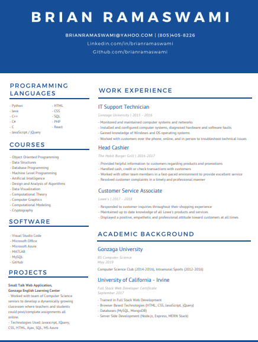

About Me
Let me tell you a few things...
BIO
I just graduated from Gonzaga University (May 2019) with a BS in Computer Science. I am looking for a full-time job as an Entry Level Software Developer or as an Intern where I can grow as a programmer within your company. My attached resume provides evidence of relevant coursework and languages needed to excel at this position.
MY RESUME
Gonzaga University
BS Computer Science - May 2019
My coursework has given me a rich mixture of both the theoretical and practical sides of my field. The classes "Design and Analysis of Algorithms", "Object Oriented Programming", and "Data Structures" provided fundamentals of programming at a high level.
I also took upper division classes in "Cryptography", "Computer Graphics", and "Computational Modeling". These classes provided practical aspects of coding such as building animations in C++, designing real world scientific models in Java, and encrypting messages over the internet in Python.
University of California - Irvine
Full Stack Web Developer - 2017
I attended a 24-week program on becoming a Full Stack Web Developer. During that time I learned technologies such as HTML5, JavaScript, JQuery, React.js. I learned design tecniques such as CSS, Bootstrap, and Sass. I mastered RESTful API's and AJAX calls.
I also learned server side technologies such as Node.js and Express.js. I worked with relational databases like MySQL and non-relational databases such as MongoDB. By the end of the class I mastered the Front and Back end of Web Development.
My Experience
I have experience coding in an agile enviornment . While working with the Gonzaga University English Learning Center, my team of 5 other developers and I, implemented a dynamically growing online classroom.
Teachers could post assignments on a web app. Students could access those assignments and submit their responses. Teachers could then give feedback and assign grades to each student. Some of the technologies I used to create this app were JavaScript, JQuery, CSS, HTML, Ajax, SQL, Microsoft Azure, and Node.JS.